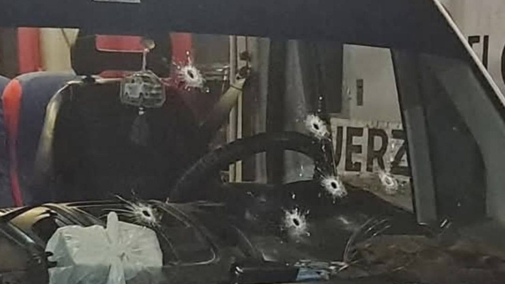
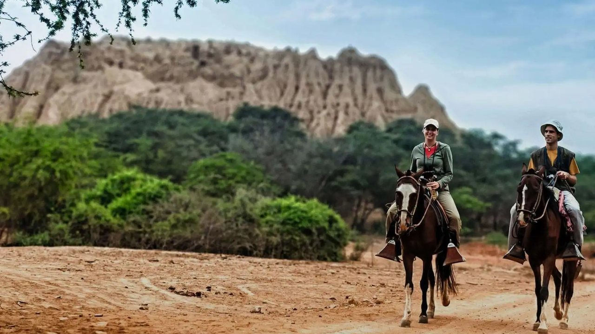
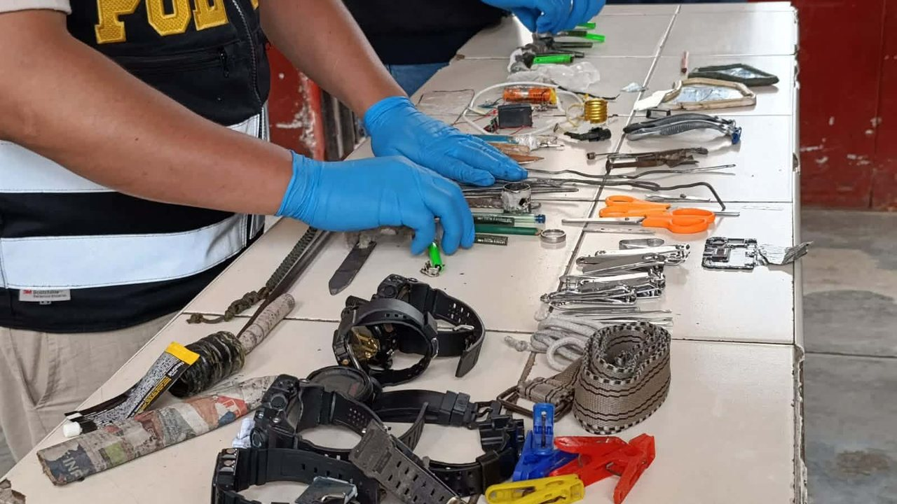
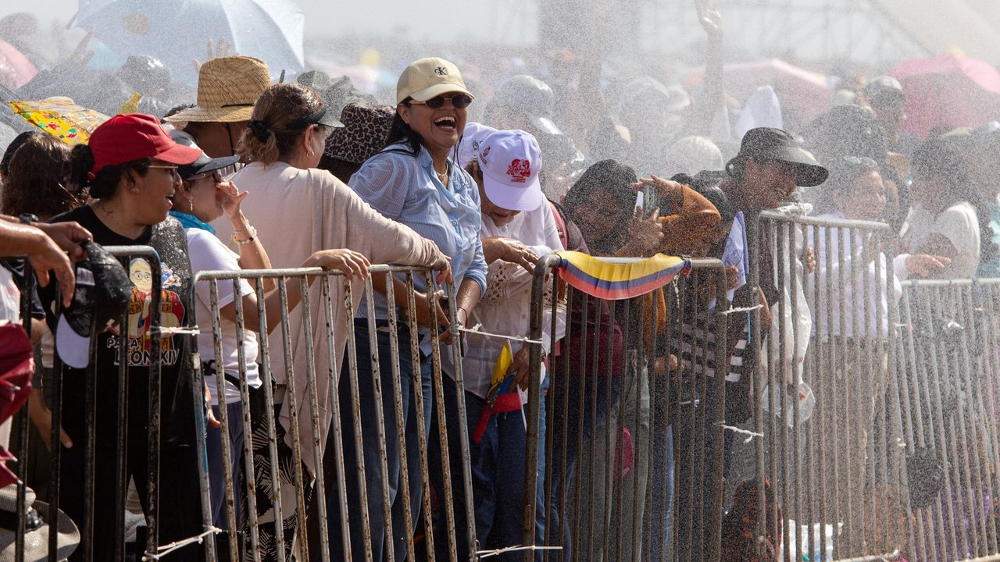
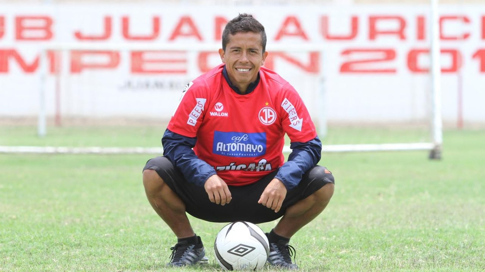
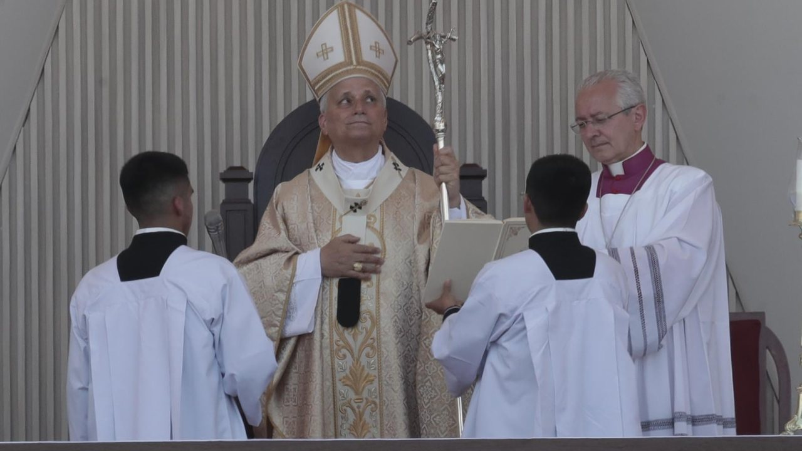

Esta es la fecha de la misa en Las Palmas Antes de presidir la Santa Misa en la Base Aérea Las Palmas, el papa León catorce continúa cumpliendo una serie de actividades en distintas ciudades del país. Senamhi revela el pronóstico para estas ciudades Seguir en Guardar ¿Cuándo vuelve el papa León catorce a Lima?








Esta es la fecha de la misa en Las Palmas Antes de presidir la Santa Misa en la Base Aérea Las Palmas, el papa León catorce continúa cumpliendo una serie de actividades en distintas ciudades del país. Senamhi revela el pronóstico para estas ciudades Seguir en Guardar ¿Cuándo vuelve el papa León catorce a Lima?
Un empresario de Carabayllo embistió con su camioneta a dos sujetos que presuntamente dispararon contra su cancha deportiva. Según RPP, dos sujetos que se desplazaban en una motocicleta llegaron hasta la cancha de grass sintético, situada en el cruce de las avenidas Universitaria y Condevilla, donde efectuaron varios disparos antes de…
Los precios de algunos productos de primera necesidad registran incrementos en el mercado Nueva Esperanza, ubicado en la plataforma comercial Andrés Avelino Cáceres, en el distrito de José Luis Bustamante y Rivero.
A balazos fue atacada la noche del último viernes una miniván de la empresa de transportes “Señor de los Milagros” cuando transitaba por el sector La Pileta, en la provincia liberteña de Julcán. Según información de la página Julcán Tv, los delincuentes abrieron fuego contra el vehículo que cubre la ruta Trujillo Calamarca.
Una mujer resultó herida en un aparatoso choque de automóviles, registrado esta mañana en el cruce de la avenida Dos de Mayo y la calle Los Cedros, en el distrito limeño de San Isidro.
Alza de la tasa de referencia del BCRP a 4,50 por ciento: ¿qué significa para los créditos, ahorros y el dólar? El Banco Central de Reserva del Perú (BCRP) elevó su tasa de interés de referencia de 4,25 por ciento a 4,50 por ciento, luego de mantenerla sin cambios desde septiembre del año pasado.
Papa León catorce destaca su relación con el Perú y llama a la unidad: los temas clave de su primer discurso Escuchar Leer resumen Seguir en Guardar Resumen Este resumen es generado por inteligencia artificial y revisado por la redacción.
La tecnológica Microsoft anunció este sábado la restauración completa de su servicio a los clientes y regiones que todavía no lo habían recuperado, tras la caída técnica que sufrió desde el pasado jueves. "Se pueden encontrar nuevas actualizaciones en MO 1550821 en el centro de administración de Microsoft 365", añade la comunicación.
Enosa restringirá el servicio eléctrico este domingo en algunas zonas de Piura y Sullana Recomiendan a los usuarios de las zonas comprendidas tomar las previsiones necesarias durante el horario de restricción Este domingo se restringirá el servicio eléctrico.
Cada edición dura menos de dos minutos. En la web tienes el resumen de cada historia y el enlace directo al medio original para leerla completa.
Conoce Olfatecho →